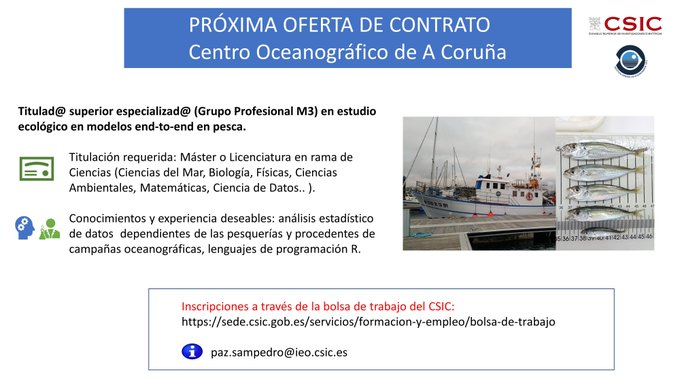

News
-
New paper out ! (03/01/2024)
Check out the work in which our MERVEX colleague Marta Cousido from IEO Vigo collaborates with María Grazia Pennino and some Brazilian colleagues. The impact of dam construction on fish consumption by riverine communities in the Amazon basin was assessed. Check it out !
-
Job offer to join us ! (29/12/2023)
End-to-end models in fisheries ! C.O of A Coruña, belonging to the IEO, National Centre of the CSIC. For further information, please contact: paz.sampedro@ieo.csic.es. CSIC job vacancies. Sign up !
 -
ICES journal Themed Set: "Advances and challenges in the modelling and assessment of fishery resources" (21/12/2023)
Papers from the special issue of the SIMERPE symposium are now available in the Journal of Marine Science with guest editors María Grazia Pennino, Santiago Cerviño and Marta Coll. Check it out !
-
I Conference of the IEO Fisheries Area (28-30/11/2023)
FIGURES 2023. +230 Experts. 5 Regional Fisheries Assessment Programmes. +20 scientific-fisheries campaigns. +400 participations in fishery research groups. +200 Advisory reports.
-
SII22_23 "Matemáticas:habelas, hainas! 2023" (23/11/2023)
Our MERVEX partner Marta Cousido participated in the: SII22_23 "Mathematics: habelas hainas! 2023". 23 November 2023, 18:30 h. Fac. Matemáticas. Charla magistral "Descifrando o mar". It aroused great interest in front of many young people! Go to the following page for more information about the event.
-
World Fisheries Day (21/11/2023)
Taking advantage of this day, we want to highlight the work done by the MERVEX group to ensure the sustainability of fishery resources. Take a look at the video of the MERVEX group where we explain it to you! Watch the "IEO Vigo" Youtube channel to see the video.
-
MERVEX presentation video (08/11/2023)
Finally! The day has come! Some time ago we announced that we were preparing a surprise in the form of a video. We hope you like and enjoy it! In Spanish; subtitles available in Spanish, Galician and English. Watch the "IEO Vigo" Youtube channel to see the video.
-
Big welcome to Alberto Couce (07/11/2023)
We give a big welcome to Alberto Couce ! Start the "Master's Thesis" with us ! Title: "Evaluation of fisheries management strategies using statistical simulation" Supervisors: Santiago Cerviño, Marta Cousido and Maria Grazia Pennino.
-
SIMERPE2 (24-27/10/2023)
Several members of the MERVEX group participate in "SIMERPE 2: Second Iberian Symposium on Modeling and Assessment of Fishery Resources" with presentations, invited talks, posters... Watch the "Proyecto Math4Fish" Youtube channel to follow all the sessions.
Go to the SIMERPE2 page for more information. -
Talk by Marta Cousido in the "WKLIFEXII" (17/10/2023)
On Tuesday 17, our colleague Marta Cousido presented the following communication: "Challenges developing ad-hoc MSE for Sole in divisions 8.c and 9.a", with the participation also of Maria Grazia and Santiago Cerviño. Go to he ICES web for more information.
-
Workshop 12 on the Development of Quantitative Assessment Methodologies based on Life-history traits "WKLIFEXII" (16-20/10/2023)
Several members of the MERVEX group participate in the WKLIFEXII "Workshop 12 on the Development of Quantitative Assessment Methodologies based on Life-history traits, exploitation characteristics, and other relevant parameters for data-limited stocks". From 16 to 20 October. Lisbon, Portugal and online. WKLIFE deals on: support the rollout of the recently developed new methods for ICES stocks in categories 2 and 3 continue developing and prioritizing tasks of the 5-year WKLIFE roadmap, initiate the review of methods for stocks in data-limited categories 4-6, further evaluate and develop empirical harvest control rules and surplus production models, explore approaches for specific life-history types, provide updates on methods for data and resource-limited fisheries. Go to he ICES web for full details.
-
Announcement on SIMERPE2: "Quick Talks" (27/09/2023)
There will be contributions as "Quick Talks" What do they consist of? 6 minutes oral contributions Tuesday 24th & Thursday 26th from 12:55-13:15h Go to the SIMERPE2 web for full programme.
-
Announcement on SIMERPE2 "Socio-economic components in fisheries management" session (27/09/2023)
Thursday 26.10.23 Socio-economic components in fisheries management Speakers: JJGarcíadelHoyo from UniHuelva JoseMaríaDaRocha from Uvigo Renato Rosa from UnivdeCoimbra Marga Andrés from AZTI Go to the SIMERPE2 web for full programme.
-
ICES Annual Science Conference 2023 (11-14/09/2023)
Several members of the group have participated in the ICES Annual Science Conference 2023 sharing their work with the rest of the ICES community. Go to the ICES ASC 2023 web for full programme.
-
Announcement on SIMERPE2 thematic sessions (28/08/2023)
There will be three thematic sessions: Spatial complexity in stockassessment and fisheries management. Stockassessment for stocks with different life history traits. Socio-economic components in fisheries management. Go to the SIMERPE2 web for full programme.
- Previous news could be consulted here.
Cooming Symposium

SIMERPE 2: Second Iberian Symposium on Modeling and Assessment of Fishery Resources
The SYMPOSIUM will take place on October 24-27, 2023 on IEO (Cádiz, Spain).
FUNDED by Math4Fish (go to the website.)